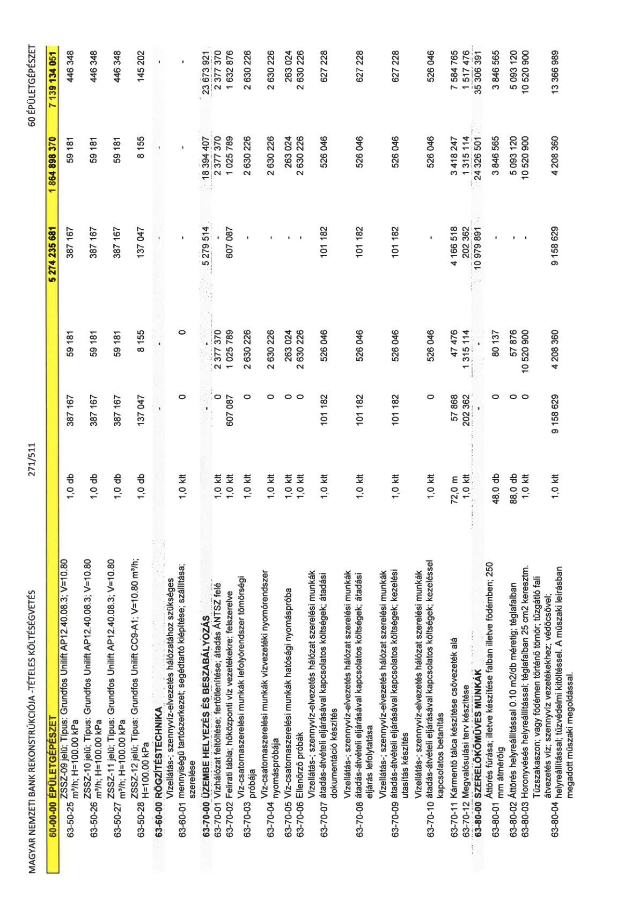

| Tétel | Menny. | Egys. | Anyag e.ár (net HUF) | Díj e.ár (net HUF) | Anyag összesen (net HUF) | Díj összesen (net HUF) | Anyag+Díj összesen (net HUF) |
|---|---|---|---|---|---|---|---|
| 60-00-00 ÉPÜLETGÉPÉSZET | NaN | NaN | 0 | 0 | 5 274 235 681 | 1 864 898 370 | 7 139 134 051 |
| 63-50-25 ZSSZ-09 jelű; Típus: Grundfos Unilift AP12.40.08.3; V=10.80 m³/h; H=100.00 kPa | 1,0 | db | 387 167 | 59 181 | 387 167 | 59 181 | 446 348 |
| 63-50-26 ZSSZ-10 jelű; Típus: Grundfos Unilift AP12.40.08.3; V=10.80 m³/h; H=100.00 kPa | 1,0 | db | 387 167 | 59 181 | 387 167 | 59 181 | 446 348 |
| 63-50-27 ZSSZ-11 jelű; Típus: Grundfos Unilift AP12.40.08.3; V=10.80 m³/h; H=100.00 kPa | 1,0 | db | 387 167 | 59 181 | 387 167 | 59 181 | 446 348 |
| 63-50-28 ZSSZ-12 jelű; Típus: Grundfos Unilift CC9-A1; V=10.80 m³/h; H=100.00 kPa | 1,0 | db | 137 047 | 8 155 | 137 047 | 8 155 | 145 202 |
| 63-60-00 RÖGZÍTÉSTECHNIKA | NaN | NaN | 0 | 0 | 5 279 514 | 18 394 407 | 23 673 921 |
| Vízellátás-; szennyvíz-elvezetés hálózatához szükséges mennyiségű tartószerkezet; segédtartó kiépítése; szállítása; szerelése | 0 | 0 | 0 | 0 | 0 | 0 | 0 |
| 63-60-01 | 1,0 | klt | 0 | 2 377 370 | 0 | 2 377 370 | 2 377 370 |
| 63-70-00 ÜZEMBE HELYEZÉS ÉS BESZABÁLYOZÁS | NaN | NaN | 0 | 0 | 607 087 | 1 025 789 | 1 632 876 |
| 63-70-01 Vízhálózat feltöltése; fertőtlenítése; átadás ÁNTSZ felé | 1,0 | klt | 607 087 | 1 025 789 | 607 087 | 1 025 789 | 1 632 876 |
| 63-70-02 Felirati tábla; hőközponti víz vezetékekre; felszerelve | 1,0 | klt | 0 | 2 630 226 | 0 | 2 630 226 | 2 630 226 |
| Víz-csatornaszerelési munkák lefolyórendszer tömörségi próbája | 0 | 0 | 0 | 0 | 0 | 0 | 0 |
| 63-70-03 | 1,0 | klt | 0 | 2 630 226 | 0 | 2 630 226 | 2 630 226 |
| Víz-csatornaszerelési munkák vízvezetéki nyomórendszer nyomáspróbája | 0 | 0 | 0 | 0 | 0 | 0 | 0 |
| 63-70-04 | 1,0 | klt | 0 | 263 024 | 0 | 263 024 | 263 024 |
| 63-70-05 Víz-csatornaszerelési munkák hatósági nyomáspróba | 1,0 | klt | 0 | 2 630 226 | 0 | 2 630 226 | 2 630 226 |
| 63-70-06 Ellenőrző próbák | 1,0 | klt | 101 182 | 526 046 | 101 182 | 526 046 | 627 228 |
| Vízellátás-; szennyvíz-elvezetés hálózat szerelési munkák átadás-átvételi eljárásával kapcsolatos költségek; átadási dokumentáció készítés | 0 | 0 | 0 | 0 | 0 | 0 | 0 |
| 63-70-07 | 1,0 | klt | 101 182 | 526 046 | 101 182 | 526 046 | 627 228 |
| Vízellátás-; szennyvíz-elvezetés hálózat szerelési munkák átadás-átvételi eljárásával kapcsolatos költségek; átadási eljárás lefolytatása | 0 | 0 | 0 | 0 | 0 | 0 | 0 |
| 63-70-08 | 1,0 | klt | 101 182 | 526 046 | 101 182 | 526 046 | 627 228 |
| Vízellátás-; szennyvíz-elvezetés hálózat szerelési munkák átadás-átvételi eljárásával kapcsolatos költségek; kezelési utasítás készítés | 0 | 0 | 0 | 0 | 0 | 0 | 0 |
| 63-70-09 | 1,0 | klt | 101 182 | 526 046 | 101 182 | 526 046 | 627 228 |
| Vízellátás-; szennyvíz-elvezetés hálózat szerelési munkák átadás-átvételi eljárásával kapcsolatos költségek; kezeléssel kapcsolatos betanítás | 0 | 0 | 0 | 0 | 0 | 0 | 0 |
| 63-70-10 | 1,0 | klt | 0 | 526 046 | 0 | 526 046 | 526 046 |
| 63-70-11 Kármentő tálca készítése csővezeték alá | 72,0 | m | 57 868 | 47 476 | 4 166 518 | 3 418 247 | 7 584 765 |
| 63-70-12 Megvalósulási terv készítése | 1,0 | klt | 202 362 | 1 315 114 | 202 362 | 1 315 114 | 1 517 476 |
| 63-80-00 SZERELŐKŐMŰVES MUNKÁK | NaN | NaN | 0 | 0 | 10 979 891 | 24 326 501 | 35 306 391 |
| 63-80-01 Áttörés fúrása; illetve készítése falban illetve födémben; 250 mm átmérőig | 48,0 | db | 0 | 80 137 | 0 | 3 846 565 | 3 846 565 |
| 63-80-02 Áttörés helyreállítással 0.10 m2/db méretig; téglafalban | 88,0 | db | 0 | 57 876 | 0 | 5 093 120 | 5 093 120 |
| 63-80-03 Horonyvésés helyreállítással; téglafalban 25 cm2 keresztm. | 1,0 | klt | 0 | 10 520 900 | 0 | 10 520 900 | 10 520 900 |
| Tűzszakaszon; vagy födémen történő tömör; tűzgátló fali átvezetés víz; szennyvíz vezetékekhez; védőcsővel; helyreállítással; tűzvédelmi kitöltéssel. A műszaki leírásban megadott műszaki megoldással. | 0 | 0 | 0 | 0 | 0 | 0 | 0 |
| 63-80-04 | 1,0 | klt | 9 158 629 | 4 208 360 | 9 158 629 | 4 208 360 | 13 366 989 |
